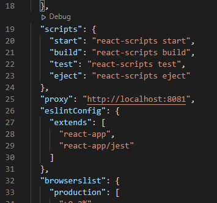
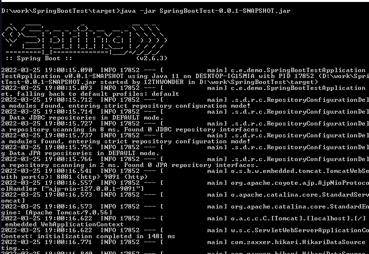
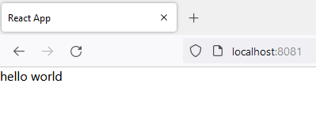

[Java] 64.Spring bootとReactを連結する方法(Buildする方法)
こんにちは。明月です。
この投稿はSpring bootとReactを連結する方法(Buildする方法)に関する説明です。
最近のプロジェクトのトレンドはフロントエンドとサーバーサイドの区分して作業します。実はこのように割り振って作業することはずいぶん前からのトレンドなんですが、私が遅い感じがありますね。私は最近までJavascriptとJqueryを使って画面とプログラムを作成しました。
プロジェクトを一人でやったことではないですが、この状況をそんなに悪いとは思わなかったんです。Jqueryでも十分にSPA(Single page application)を実装できるし、私の感じではJqueryでシステムが遅いとも思わなかったんです。
しかし、JqueryからReactに変わらなければならないと思ったことが、一つ目はライブラリがもうJqueryを依存しない、使わないことです。そうするとJqueryを使う必要があるかと思いからです。
その同時に数多くのライブラリがAngular、Vue、Reactを支援するし、その中でReactを選択した理由は単純にダウンロードが多いし、大勢の人が使うフレームワークだと思って選択しました。
以前には画面を作成する時はただeclipseからhtmlを作成し、css、jsを作成しましたが、Reactの場合はeclipseから作成することが簡単ではありません。
なのでReactはNode.jsを使ってVisual studio codeで開発してSpring bootはIntellijやeclipseで開発します。
各、別のIDEツールで開発すれば最終的にbuildしたら結果物が別に生成されるので、一つに合わせる作業が必要でしょう。
eclipseでSpring bootの開発環境を設定する方法は以前に説明しました。
リンク - [Java] 57. EclipseでSpring bootを設定する方法
そしてReactをVisual studio codeで開発環境を設定する方法も説明しました。
リンク - [Javascript] Node.jsをインストールしてReactを使う方法
それなら一旦、二つの開発環境を連結する方法は凄く簡単です。
Reactのpackage.jsonファイルにSpring bootのアドレスを連結すれば良いでしょう。

私はeclipseからSpring bootのポートを8081で設定して、ReactからProxyを8081に接続することに合わせました。
そしてeclipseから下記とおりなデータを取得する関数を作成しましょう。
package com.example.demo.controller;
import org.springframework.stereotype.Controller;
import org.springframework.ui.Model;
import org.springframework.web.bind.annotation.RequestMapping;
// コントローラのアトリビュート
@Controller
public class AjaxController {
// 要請マッピングアトリビュート
@RequestMapping(value = "/data/hello.json")
// Stringのデータ
@ResponseBody
public String helloworld(Model model) {
// 結果はhello world
return "hello world";
}
}
import React, { useEffect, useState } from 'react';
// ajax関数
const ajax = (url: string, method = "GET", data: object | null, success: ((req: XMLHttpRequest) => void) | undefined | null = null, error: ((req: XMLHttpRequest) => void) | undefined | null = null, sync = true): void => {
// XMLHttpRequestオブジェクト
let xhr = new XMLHttpRequest();
// バッファー変数
let json = "";
// 非同期の状態の更新イベント
xhr.onreadystatechange = (e) => {
// XMLHttpRequestオブジェクト
let req = e.target as XMLHttpRequest;
// nullなら処理しない
if (req == null) {
return;
}
// 非同期処理が完了すれば(Code state - 4)
if (req.readyState === XMLHttpRequest.DONE) {
// http status 200なら(正常要請なら)
if (req.status === 200) {
// success関数の呼び出す。
if (success !== null && success !== undefined) {
success.call(this, req);
}
} else {
// error関数の呼び出す。
if (error !== null && error !== undefined) {
error.call(this, req);
}
}
}
}
// data値がnullではなければ
if (data != null) {
// jsonタイプに変更
json = JSON.stringify(data);
}
// XMLHttpRequest基本設定
xhr.open(method, url, sync);
// XMLHttpRequestヘッダー設定
xhr.setRequestHeader('Content-Type', 'application/json');
xhr.setRequestHeader('Cache-Control', 'no-cache');
// 非同期通信開始
xhr.send(json);
};
// React開始関数
function App() {
// message状態処理
const [message, setMessage] = useState("");
useEffect(() => {
// 非同期処理
ajax("/data/hello.json", "GET", null, (msg) => {
// 状態更新
setMessage(msg.responseText);
}, null, false);
}, []);
// 画面表示
return (
<>
{message}
</>
);
}
export default App;
Spring bootとreactが連結されたことを確認できます。
私の場合はフロントエンドとサーバーサイドを一緒に開発するので、一つのローカルで作業しますが、もし、複数の人と割り振りされてうるならその仕様に合わせる開発サーバーにproxyを連結すれば良いです。
ここまでが開発環境でbuild設定を合わせます。
buildはまずフロントエンドのReactソースをビルドします。 そうするとhtmlとcss、jsを生成します。それをSpring bootのstaticフォルダーに格納してSpring bootをビルドします。
私の話はしやすいですが、実際に設定することは簡単ではなかったんです。それでグーグルを参照しました。
リンク - https://github.com/eirslett/frontend-maven-plugin/issues/872
リンク - https://github.com/eirslett/frontend-maven-plugin
それならSpring bootのpom.xmlの設定を確認しましょう。
<!-- プロパティ設定 -->
<properties>
<java.version>11</java.version>
<frontend-src-dir>${project.basedir}/../my-app</frontend-src-dir>
<frontend-maven-plugin.version>1.12.1</frontend-maven-plugin.version>
</properties>
<build>
<plugins>
<!-- Spring bootをjarで実行するためのビルドパッケージ -->
<plugin>
<groupId>org.springframework.boot</groupId>
<artifactId>spring-boot-maven-plugin</artifactId>
</plugin>
<!-- Reactをビルドするためのパッケージ -->
<plugin>
<groupId>com.github.eirslett</groupId>
<artifactId>frontend-maven-plugin</artifactId>
<version>${frontend-maven-plugin.version}</version>
<!-- バージョン設定はbuildをする環境のnodejsとnpmバージョン設定 -->
<configuration>
<nodeVersion>v16.14.2</nodeVersion>
<npmVersion>8.5.0</npmVersion>
<workingDirectory>${frontend-src-dir}</workingDirectory>
<installDirectory>${project.build.directory}</installDirectory>
</configuration>
<!-- 実行コマンド -->
<executions>
<execution>
<id>install-frontend-tools</id>
<goals>
<goal>install-node-and-npm</goal>
</goals>
</execution>
<!-- npmパッケージのダウンロードおよびインストール -->
<execution>
<id>npm install</id>
<goals>
<goal>npm</goal>
</goals>
<configuration>
<arguments>install</arguments>
</configuration>
</execution>
<!-- npmビルド -->
<execution>
<id>npm run build</id>
<goals>
<goal>npm</goal>
</goals>
<configuration>
<arguments>run build</arguments>
</configuration>
</execution>
</executions>
</plugin>
<!-- ReactがビルドされたフォルダーからSpring bootプロジェクトにコピーするパッケージ -->
<plugin>
<artifactId>maven-resources-plugin</artifactId>
<executions>
<execution>
<id>position-react-build</id>
<goals>
<goal>copy-resources</goal>
</goals>
<phase>prepare-package</phase>
<configuration>
<!-- Spring boot의 htmlファイルパス -->
<outputDirectory>${project.build.outputDirectory}/static</outputDirectory>
<resources>
<resource>
<directory>${frontend-src-dir}/build</directory>
<filtering>false</filtering>
</resource>
</resources>
</configuration>
</execution>
</executions>
</plugin>
</plugins>
</build>
上でNode.jsとnpmのバージョンを実行する環境で合わせなければならないです。
コンソールからnpm versionコマンドで確認することができます。
設定は完了しました。
これからビルドしましょう。
ログにReactがビルドすることを確認できますね。
buildが完了しました。それならtargetフォルダーにjarファイルが生成されたことを確認できます。
まず、ウィンドウから圧縮内容を確認しましょう。

jarファイル中でReactのhtmlとjs、cssが作成されてファイルがあることを確認できるでしょう。
それならjarファイルを実行しましょう。

実行は問題なしでできます。

画面も問題ないで実行できます。
これからReactとSpring bootを設定する開発環境設定は完了しました。
ここまでSpring bootとReactを連結する方法(Buildする方法)に関する説明でした。
ご不明なところや間違いところがあればコメントしてください。
- [Java] 64.Spring bootとReactを連結する方法(Buildする方法)2022/03/25 21:02:18
- [Java] 63. Spring bootでcronスケジューラとComponentアノテーション2022/03/16 18:57:30
- [Java] 62. Spring bootでWeb-Filterを設定する方法(Spring Security)2022/03/15 22:16:37
- [Java] 61. Spring bootでRedisデータベースを利用してセッションクラスタリング設定する方法2022/03/01 18:20:52
- [Java] 60. Spring bootでApacheの連結とロードバランシングを設定する方法2022/02/28 18:45:48
- [Java] 59. Spring bootのJPAでEntityManagerを使い方2022/02/25 18:27:48
- [Java] 58. EclipseでSpring bootのJPAを設定する方法2022/02/23 18:11:10
- [Java] 57. EclipseでSpring bootを設定する方法2022/02/22 19:04:49
- [Java] 64.Spring bootとReactを連結する方法(Buildする方法)2022/03/25 21:02:18
- [Javascript] Node.jsをインストールしてReactを使う方法2022/03/23 18:01:34
- [Java] 63. Spring bootでcronスケジューラとComponentアノテーション2022/03/16 18:57:30
- [Java] 62. Spring bootでWeb-Filterを設定する方法(Spring Security)2022/03/15 22:16:37
- [Java] JWT(Json Web Token)を発行、確認する方法2022/03/14 19:12:58
- [Java] 61. Spring bootでRedisデータベースを利用してセッションクラスタリング設定する方法2022/03/01 18:20:52
- [Java] 60. Spring bootでApacheの連結とロードバランシングを設定する方法2022/02/28 18:45:48
- [Java] 59. Spring bootのJPAでEntityManagerを使い方2022/02/25 18:27:48
- [Java] 58. EclipseでSpring bootのJPAを設定する方法2022/02/23 18:11:10
- [Java] 57. EclipseでSpring bootを設定する方法2022/02/22 19:04:49
- [Python] Redisデータベースに接続して使い方2022/02/21 18:23:49
- [Java] Redisデータベースを接続して使い方(Jedisライブラリ)2022/02/16 18:13:17
- [C#] Redisのデータベースを接続して使い方2022/02/15 18:46:09
- [CentOS] Redisデータベースをインストールする方法とコマンドを使い方2022/02/14 18:33:07
- [Design pattern] 3-6. ステートパターン(State pattern)2021/11/17 20:04:47